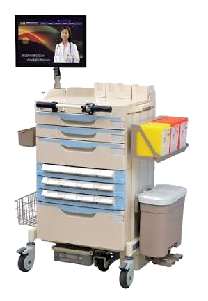
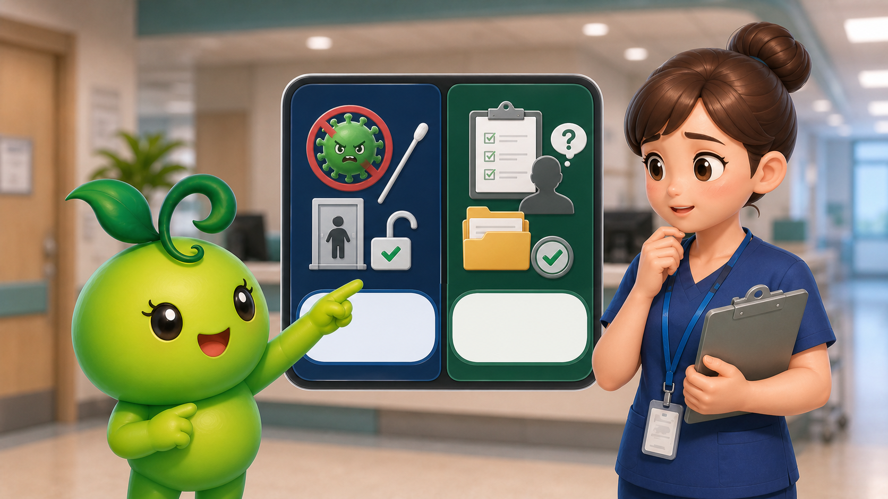
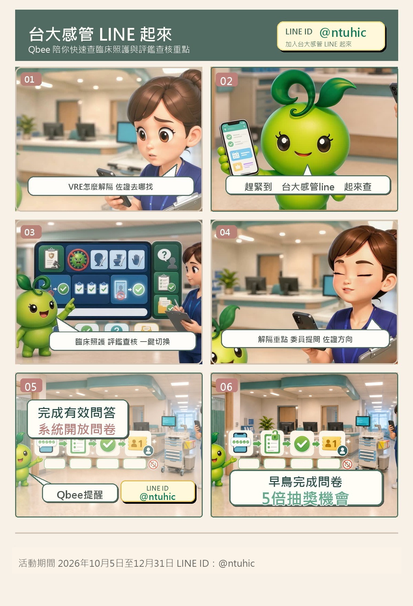
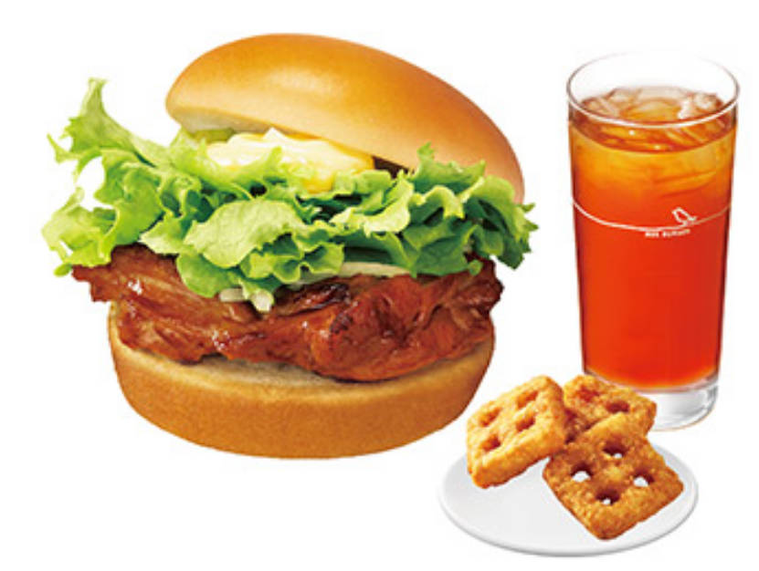

臨床照護
快速查詢通報、隔離、解隔、採檢與清消流程，掌握現場執行重點。
NTUH INFECTION CONTROL
需要的感管資訊，不必翻找、不再苦等。
陪你把複雜問題，問得簡單一點。
免安裝新 App · 活動起日與官方 QR code 以後續公告為準 · 請勿輸入病人姓名、病歷號、床號等個資
YOUR SMART IPC PARTNER
從臨床流程到日常衛教，把正確資訊送到每一個需要的時刻。

快速查詢通報、隔離、解隔、採檢與清消流程，掌握現場執行重點。

整理常見提問與佐證方向，讓新進與輪調同仁也能迅速找到答案。
提供國內外疫情、旅遊健康提醒與白話感染預防資訊。
PROMO COMIC
正式活動起日、官方 QR code 與活動辦法，將以感染管制中心後續公告為準。


活動起日待公告
正式啟用日尚待官方帳號付費與上線流程確認；活動時程將以後續公告為準。
| 階段 | 完成問卷期間 | 抽獎時計算 |
|---|---|---|
| 第一波早鳥 | 正式起日後第 1 — 3 日 | 5倍機會比一般多 4 次 |
| 第二波加碼 | 正式起日後第 4 — 7 日 | 列 3 次比一般多 2 次 |
| 一般活動 | 第 8 日起至活動截止日 | 列 1 次基本抽獎機會 |
THREE SIMPLE STEPS
活動正式啟用後，點擊按鈕前往 LINE，加入 @ntuhic。
依需求體驗感管政策、查核重點、疫情或健康衛教。
每個 LINE 帳號限一次資格，得獎將由官方帳號直接通知。